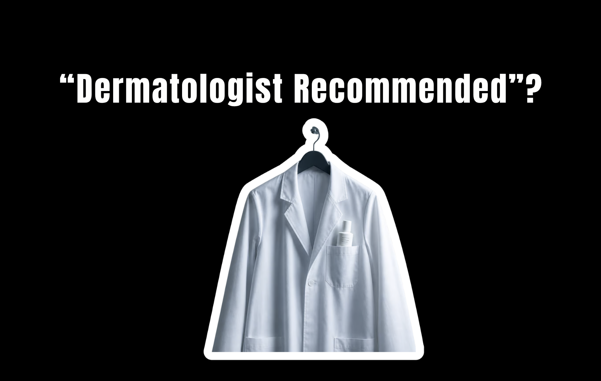
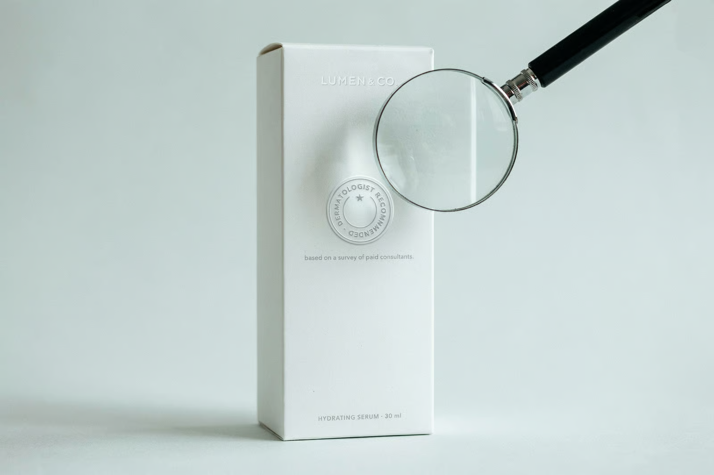
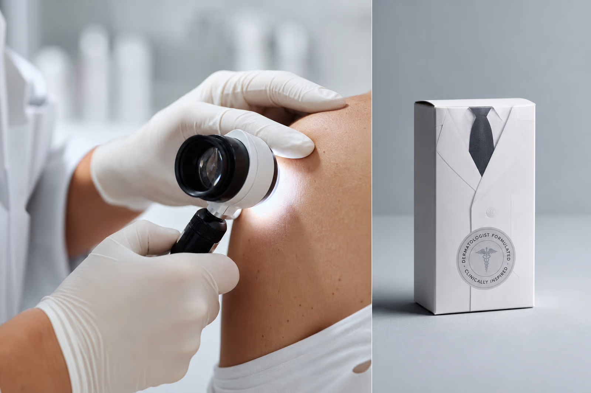

Let me say the thing this whole industry is built on you not saying out loud. When you see dermatologist recommended on a box, you feel a little click of trust. A doctor, a specialist, someone with a medical degree looked at this and said yes. That click is the entire point, it is worth a fortune, and it is almost entirely manufactured. The phrase is not a lie in the legal sense. It is something more useful to a brand than a lie. It is a technically true statement engineered to make you conclude something that is not true.
What the Phrase Actually Requires
Start with the words themselves, because the industry chose them with care. Dermatologist recommended does not mean dermatologists in general recommend this product. It does not mean a majority of them, or even a meaningful number of them, have any opinion on it at all. In practice it usually traces back to a survey. A company pays for research in which some number of dermatologists are asked whether they would recommend a product like this, or are shown a category and asked to name what they suggest. The bar is low and the wording is soft, and out the other end comes a phrase that can go on a box.

Sometimes it is thinner than that. Recommended by a dermatologist, singular, can mean exactly one doctor, who may have been paid as a consultant, said a favorable thing once. One. The grammar is doing enormous work. A brand will let you read the plural energy of the phrase while standing behind the technicality of the singular.
“Tested” Is the Emptiest Word on the Box
Its cousin is dermatologist tested, and that one is even weaker. Tested means a dermatologist was present for some test at some point. It says nothing about the result. It does not mean the product passed, worked, or impressed anyone. A product could be tested, perform terribly, and still wear dermatologist tested on the front with total honesty, because the claim is about the fact that a test occurred, not about what the test found. Read it literally and it evaporates in your hand.
The same trick runs through the whole vocabulary. Developed with dermatologists means one was in a meeting. Founded by a doctor means the person who owns the company has a degree, not that the degree touched the formula. A face in a white coat in the ad is an actor or a paid partner unless proven otherwise. Every one of these is designed to borrow the authority of medicine without submitting to any of the standards of it.
Why a Real Endorsement Basically Cannot Exist
Here is the part that should end the spell entirely. A dermatologist recommending a specific product to the general public, by name, for money, is stepping toward an ethical line their profession takes seriously. Medicine has rules about doctors lending their authority to commercial products, because that authority is exactly what makes their advice worth anything. So the genuine, considered, this-specific-product-is-excellent endorsement you imagine is behind the phrase is the one thing the phrase almost never contains. What you get instead is the survey, the single paid consultant, the meeting, the actor. The real version is largely absent by design.

And notice what these products conveniently are not required to do. A prescription drug has to prove it works to a regulator before a doctor can prescribe it. A moisturizer with dermatologist recommended on the front has to prove nothing of the kind. The phrase is doing the job that actual evidence would do, at a fraction of the cost, with none of the accountability.
The Tell Is That the Good Stuff Does Not Need It
Pay attention to where this language clusters. It swarms the products that have the least to say for themselves. A basic cleanser, a me-too moisturizer, a sunscreen indistinguishable from a dozen others reaches for dermatologist recommended precisely because it needs to borrow a credential it cannot earn on results. When a formula genuinely does something, the brand tends to talk about the thing it does. When it does not, it rents a white coat.
This is the reliable inversion. The more a product leans on the authority of doctors in the abstract, the less it usually has in the way of specifics you can actually check. Borrowed authority is what you reach for when you have run out of your own.
What to Trust Instead
None of this means dermatologists are useless. It means the opposite. A real dermatologist, examining your actual skin, is one of the most valuable things you can spend money on, and that is exactly the authority the phrase on the box is imitating and hoping you will accept in cheaper form. The endorsement you should trust is the one given to you, in person, about you, with nothing being sold in that moment. Everything else is marketing wearing a lab coat.
So do the small, deflating thing the next time a box tries to hand you that click of trust. Ask it to be specific:
- Recommended by whom, exactly — and how many of them?
- Measured how, and against what?
- Were they paid, consulted, or simply shown a category and a survey?
The phrase cannot answer, because it was built precisely so it would never have to. A claim that dissolves the instant you ask it a question was never evidence. It was always an ad.